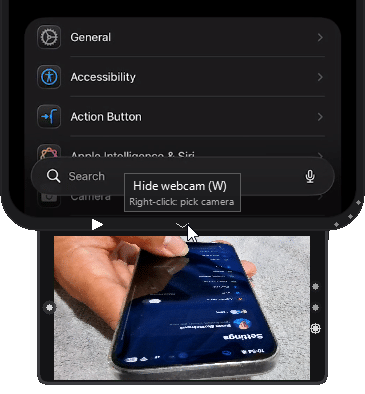
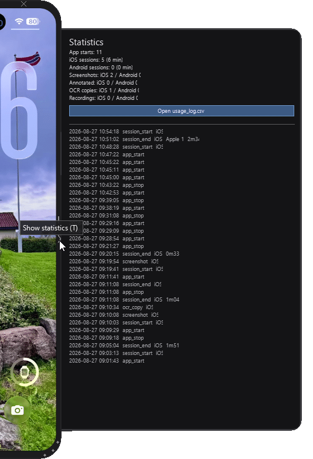
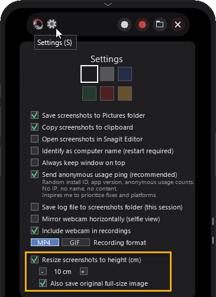
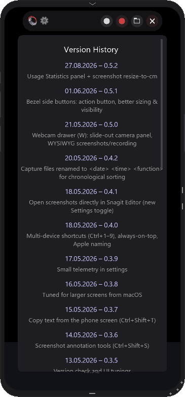
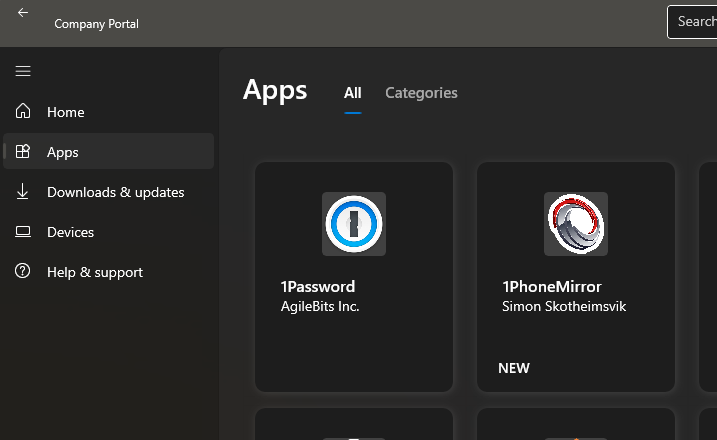
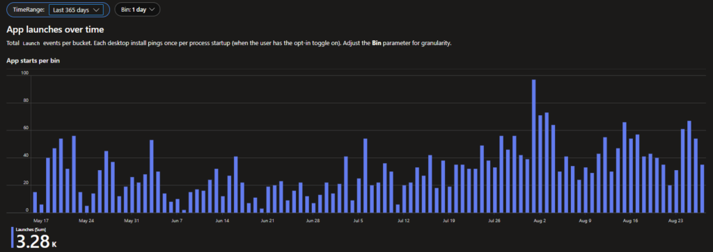

It’s been a few months since I first wrote about my 1PhoneMirror tool, and it has kept moving – mostly driven by my own needs and, honestly, a fair bit of curiosity-driven tinkering. I use it regularly myself, both for writing documentation and for live demos, and both of those use cases have quietly pushed the tool forward in directions I didn’t originally plan for, and it’s just reached a milestone I wasn’t sure I’d get to: it’s now properly code-signed!
Live demos are their own kind of feedback loop
Something I didn’t expect: doing live demos with 1PhoneMirror generates almost as much feedback as actually shipping features. People notice the framed screenshots in a guide and ask how I got them so clean. People watching a demo ask what app I’m using to mirror the phone onto the screen. Those small questions turned into a habit – every time someone asked “how do you do that”, I’d go home with a new idea for the backlog.
That loop is basically how most of what follows came to exist. None of it was planned in May. It all came from actually using the tool.
What’s new in 1PhoneMirror since the last post
A few of the additions are worth calling out specifically for anyone using 1PhoneMirror for documentation or training work.
A webcam drawer, for showing how, not just what
Screen mirroring only tells half the story in a live demo. It shows what’s on the phone, not how someone is actually holding it, tapping it, or scanning something next to it. The new webcam drawer (W) slides out from the bottom bezel and shows a live camera feed right alongside the mirrored phone, styled to match the rest of the app. This is perfect when you want a webcam showing your hands handling the phone.

The app lets you easily switch between available webcams on our computer with the buttons in the right-side bezel of the camera drawer. Screenshots and recordings capture the phone and the webcam together as a single framed image, so there’s nothing to stitch together afterward.
The example above shows a recording demonstrating how to navigate the phone, including the webcam of hand motions
A small Statistics panel, mostly for me
The newest addition is a Statistics drawer (T), sitting next to the log viewer. It’s a simple, private view of your own usage – sessions and minutes mirrored, screenshots, annotations, OCR copies, and recordings, split between iOS and Android. This gives you insights into your actual usage of the tool and the value it hopefully bring to your daily workflow.

Everything lives in a local CSV on your own machine, with a button to open it directly for further analysis on your own. It was built for the same reason as everything else here – I wanted to know my own patterns – but it’s there for anyone who’s curious about their own usage too.
Screenshots sized exactly for Word and PowerPoint
This one came straight out of documentation pain. I was constantly resizing pasted screenshots by hand to fit a guide. Now you can tell 1PhoneMirror to resize screenshots to an exact height in centimeters before saving or copying them — set it once in Settings, and every screenshot comes out already sized, still sharp, ready to paste.

Now I get the resize to an exact height; no more manual resizing afterward
Smaller 1PhoneMirror things
Between the headline features, there’s a steady trickle of smaller polish that’s easy to forget happened at all:
- Bezel side buttons were reorganized for better sizing and visibility.
- Capture files now follow a consistent `<date> <time> <function>` naming pattern, so they sort chronologically in Explorer without any extra effort.
- Integration with my favorite screenshot tool, Snagit.
- Automatic update check upon launching the app
- Screenshot annotations
- OCR copy text from the phone
- The in-app Version History scrollbar is now click-draggable, instead of scroll-only.
- and more…
Honestly, I lose track of the smaller changes myself between releases, which is exactly what the in-app Version History panel is for. Press `V` at any time to see the full, dated list of everything that’s shipped, big or small.

1PhoneMirror is now signed
Code signing has been on my radar since the start, and I’m happy to say that as of v0.6.0 it’s finally sorted: 1PhoneMirror is now digitally signed.
Getting here took a couple of attempts. I first looked at SignPath’s open-source signing program, which didn’t pan out, and then moved to Azure Trusted Signing. The one thing standing in my way there was the Public Trust identity validation – it simply wasn’t available for Norway, so I parked the whole idea. That has since changed: the Norwegian validation path opened up, I went through it as a registered sole proprietorship, and signing started working.
The result is that every 1PhoneMirror-*.msi release, and every executable and DLL bundled inside it, is now signed and timestamped, with a real, verified publisher behind it. In practice, Windows SmartScreen and Microsoft Defender now recognize 1PhoneMirror as coming from a known publisher instead of throwing the usual “unknown publisher” warning at people trying it for the first time.
I still publish the SHA-256 hash on every GitHub Release for anyone who wants to verify their download, but now there’s a proper signature backing it too. For a solo side project, that’s a nicer place to land than I expected when I first started writing this section.
1PhoneMirror distributed using Intune
Another nice side effect of properly signing the application is that it can now be distributed through enterprise management platforms such as Microsoft Intune without the trust and reputation concerns typically associated with unsigned software. I’ve successfully tested deployment of the MSI using Patch My PC’s Custom App feature integrated with Intune, and the installation, detection, and update experience worked exactly as expected.

For anyone looking to make 1PhoneMirror available to users at scale or for users on locked-down devices without local admin privileges (read: anyone), that opens the door to standard enterprise software deployment and lifecycle management.
What actually keeps me going
I added a fully anonymous, opt-in usage ping a while back, mostly out of curiosity more than anything strategic. You can opt out entirely in Settings, and some of you have (no hard feelings, I promise the counter still ticks along fine without you).
I don’t check the numbers often. They’re not a dashboard I live in. But every time I do look, it’s the same three reactions in a row: humbled, proud, and – genuinely – surprised.

Since the ping went live, 1PhoneMirror has logged close to 3,300 launches, and the pattern suggests it’s being opened somewhere, by someone, pretty much every single day. That’s not a huge number in the grand scheme of software, but it’s a real number of real people who found this thing useful enough to keep coming back to.
And that raises more questions than it answers. Who are you? Where did you even find this app? How are you actually using it day to day? What features are you missing? What’s annoying you about it right now?
I have no way of knowing any of that from a counter alone, which is exactly why the comment field below exists. If you’re one of those ~3,300 launches, I’d genuinely love to hear from you.